INPEK FITNESS フランチャイズオーナー募集動画 ／ 完成動画 シーン一覧
株式会社CIVEXUS（INPEK FITNESS 小田原駅前店）FCオーナー募集動画・完成版（約60秒）のシーン一覧です。内容のご確認をお願いいたします。
ご確認事項
S14（エンドカード）のお問い合わせ先は現在確認中のため、確定次第反映いたします。それ以外の内容についてご確認ください。
S06のテロップを変えてほしいシーン番号（例：S06）でお知らせいただくとスムーズです。

画像をクリックするとYouTubeで再生されます（約60秒）。
完成動画（全14シーン）
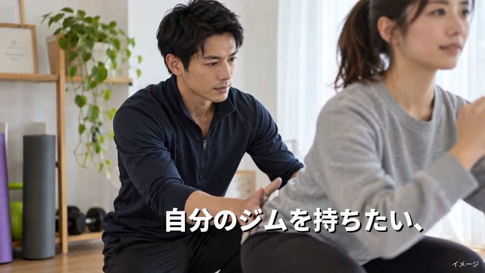
カウンセリング風景
トレーナーと相談者のカウンセリングシーン。
ナレーション：「自分のジムを持ちたい、パーソナルトレーナーへ。」
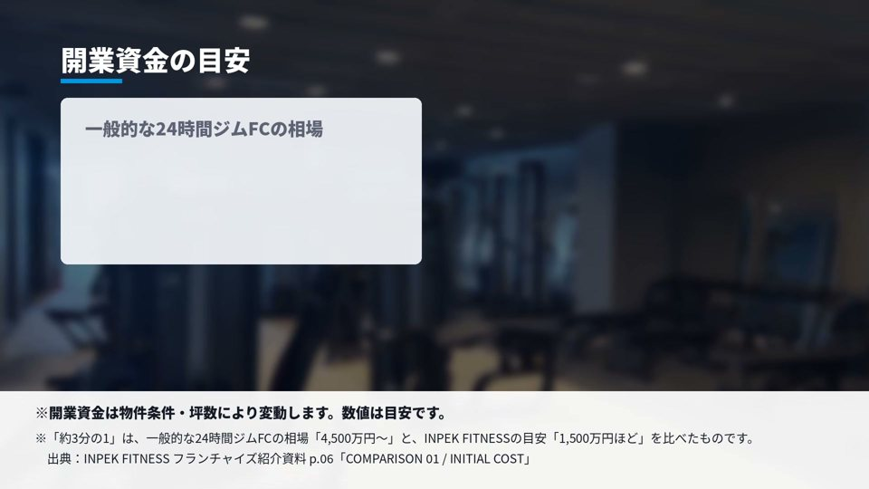
開業資金の目安（相場提示）
一般的な24時間ジムFCの開業資金相場を提示するカード。
ナレーション：「一般的な24時間ジムフランチャイズの開業資金は4,500万円から」
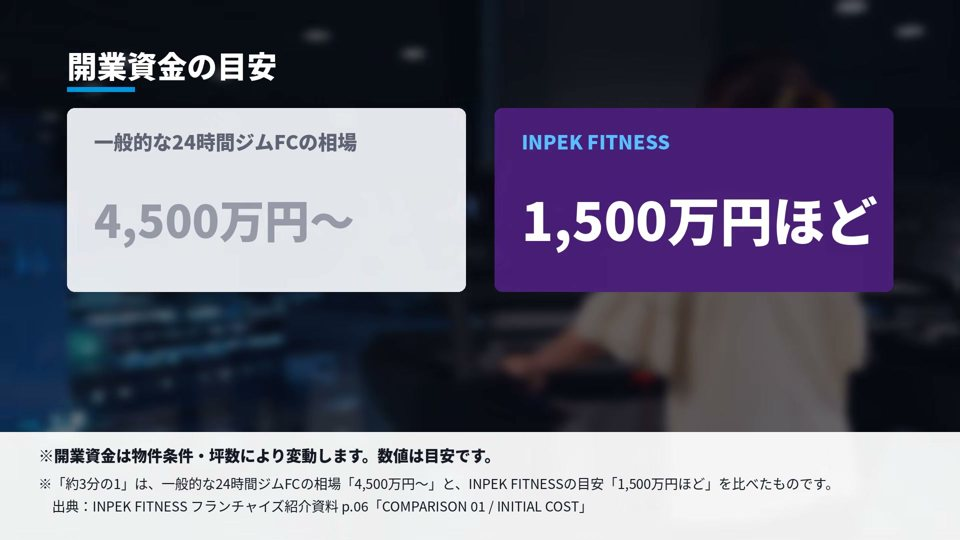
INPEK FITNESSの開業資金
同カードにINPEK FITNESSの具体額を提示。
ナレーション：「インペクフィットネスは1,500万円ほどが目安」
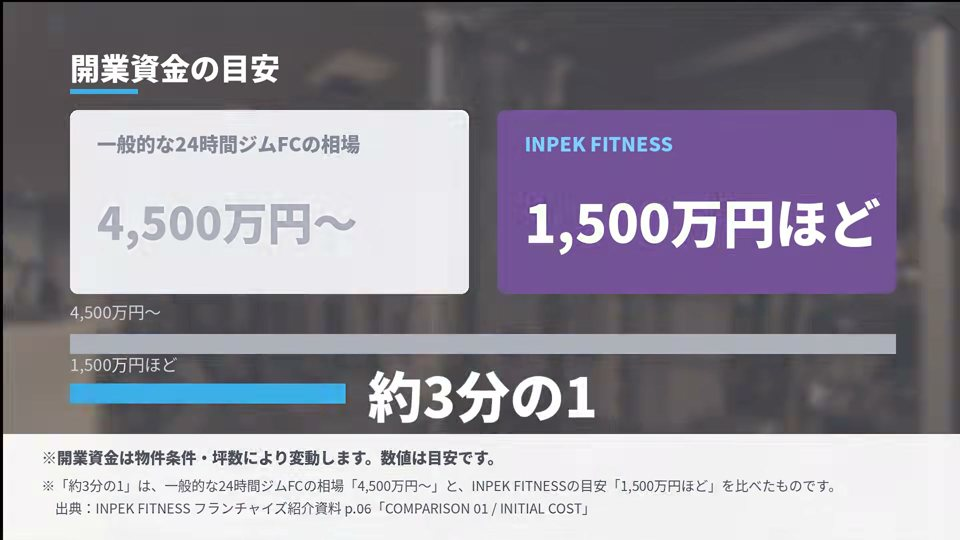
比較バー
相場との差を示す比較バー（出典：フランチャイズ紹介資料p.06と小さく注記）。
ナレーション：「その差約3分の1」
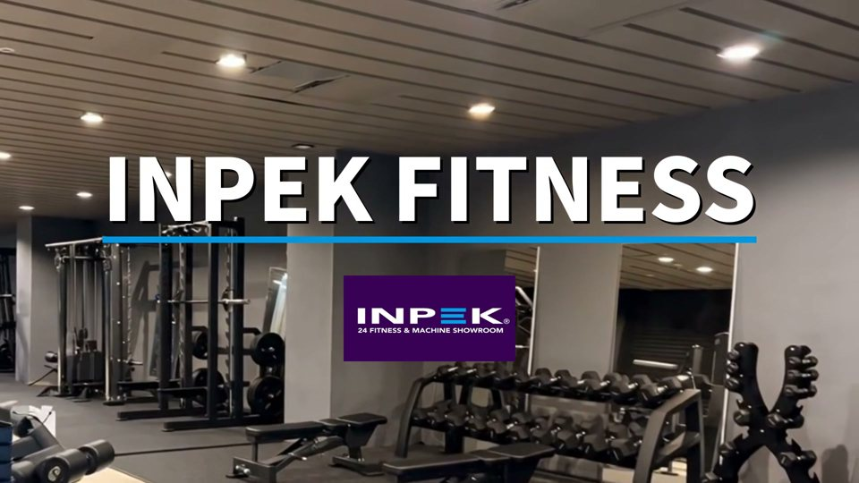
ロゴ×ジム内観
INPEK FITNESSロゴとジム内観のカット。
ナレーションなし
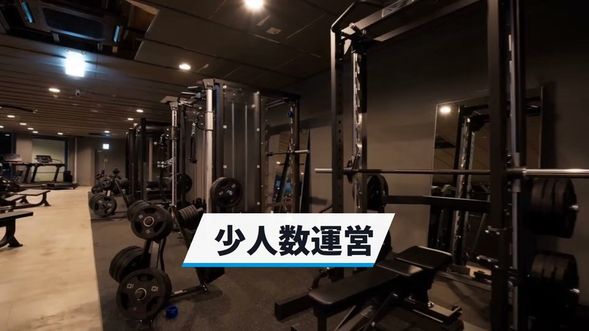
フリーウエイトエリア
店内フリーウエイトエリアのカット。
ナレーション：「小スペース設計で少人数運営」
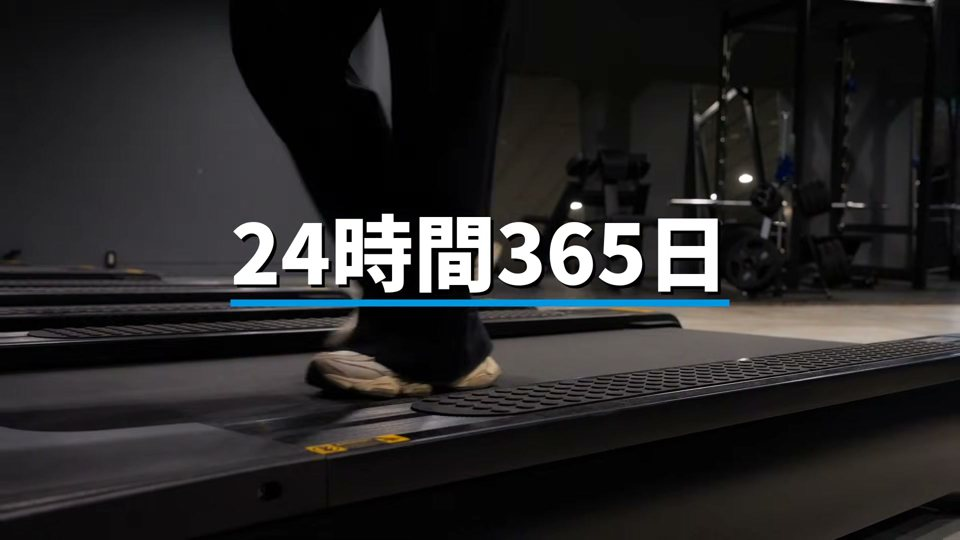
トレッドミル足元
マシンエリアの足元カット。
ナレーション：「24時間365日利用できるセルフ型フィットネスジムです」
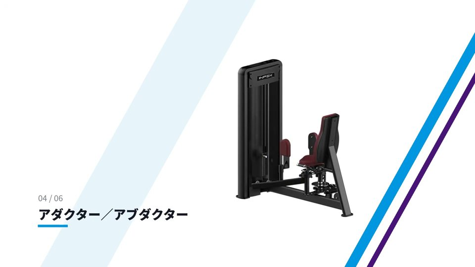
マシン紹介カット
アダクター／アブダクター等のマシン紹介（本店実績カードへの導入）。
ナレーション：「本店では、オープンから3ヶ月で200名を集客」（S09に続く）
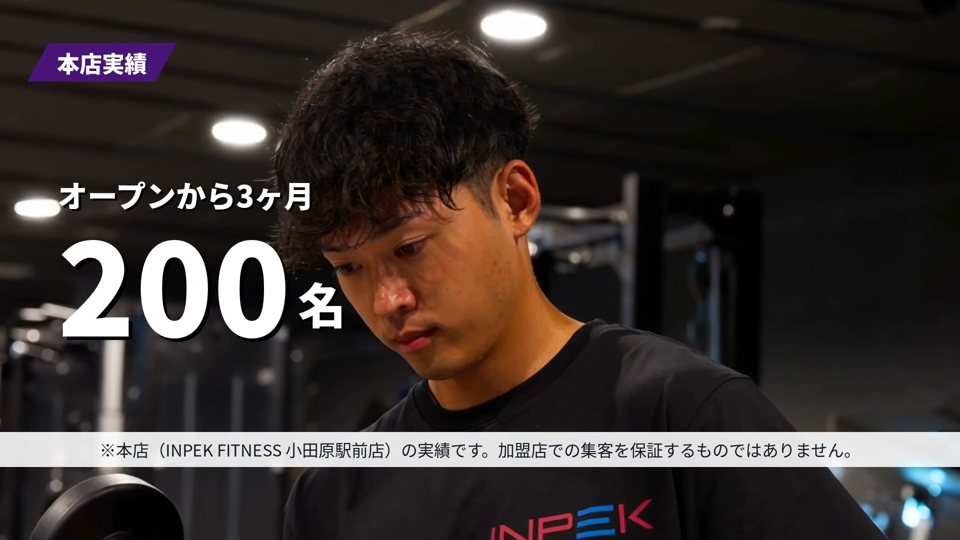
本店実績カード
本店実績を提示するカード。脚注に「加盟店での集客を保証するものではありません」と明記。
ナレーション：S08から継続
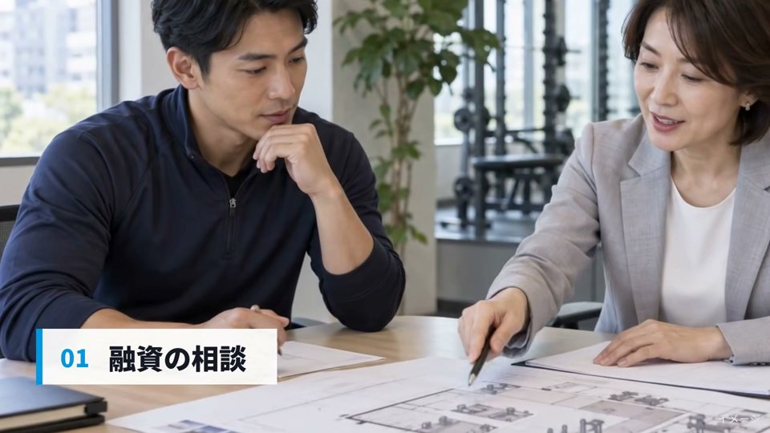
融資相談シーン
開業サポートのステップ紹介、融資相談カット。
ナレーション：「融資の相談から物件探し、開業準備」
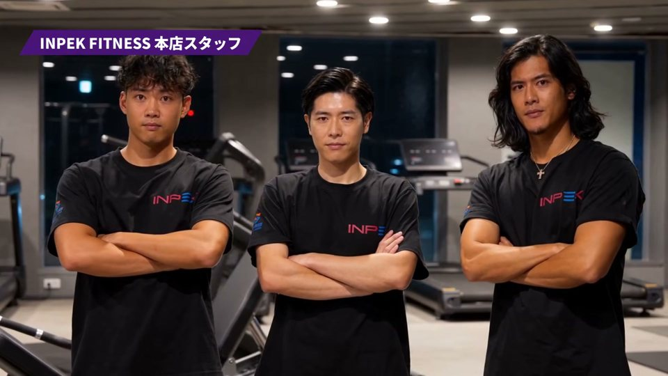
本店スタッフ紹介＋運営サポート
本店スタッフの紹介と、開業後の運営サポートの説明。
ナレーション：「そして開業後の運営まで、本部が一緒に進めます」
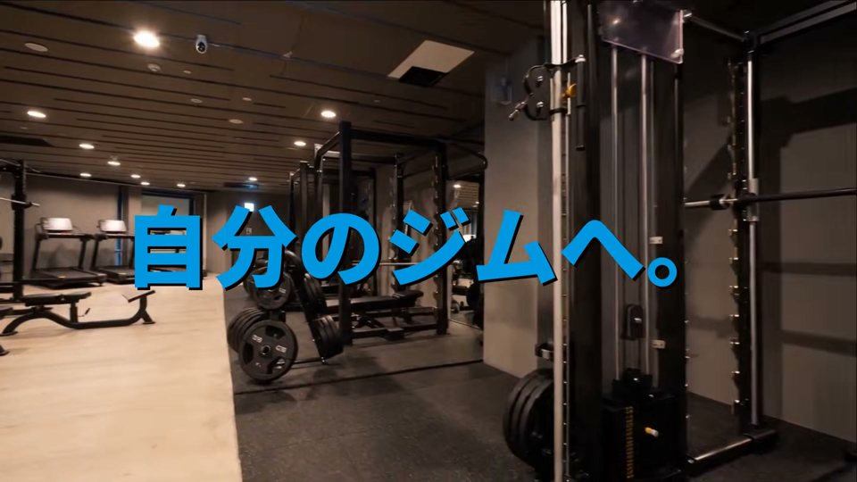
夜景を眺める人物
夜景を眺める人物とジム内観のカット。
ナレーション：「あなたの次の一歩を、自分のジムへ」
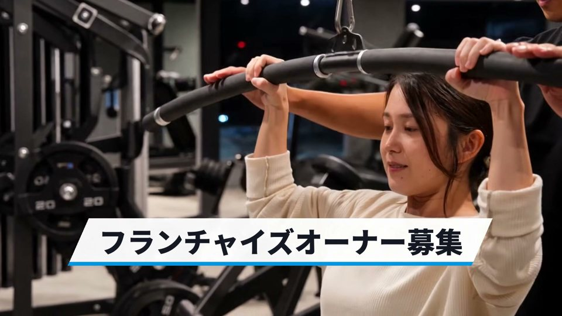
トレーニング風景
バーベルトレーニング等のつなぎカット。
ナレーション：「インペクフィットネス、フランチャイズオーナーを募集しています」
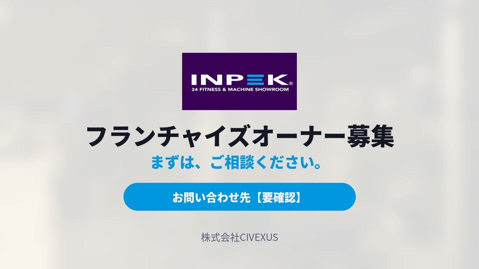
エンドカード
INPEK FITNESSロゴ＋CTA。お問い合わせ先は確認中です。
ナレーションなし